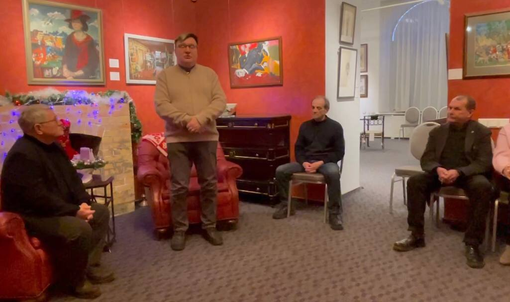
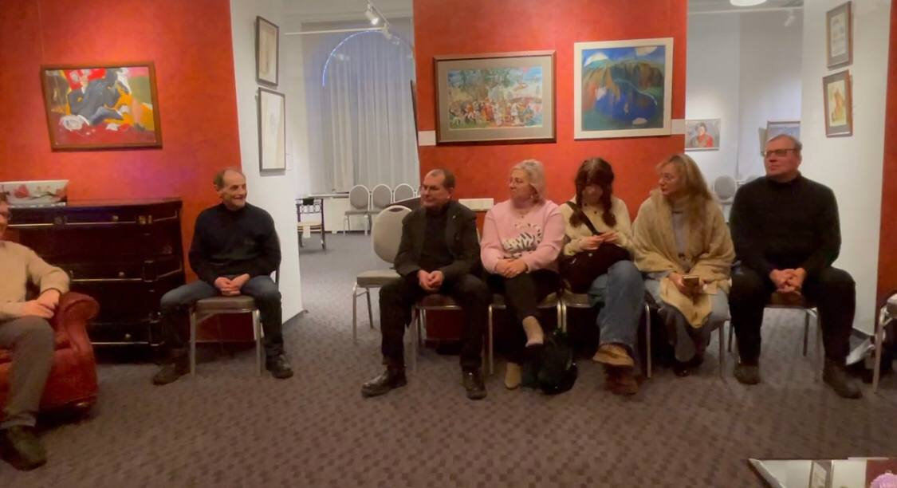

Почему современному городу нужна своя философская премия, каким должен быть публичный интеллектуал и почему именно сейчас его роль становится столь значимой?
Ответы на эти вопросы прозвучали в музейно-выставочном центре «Петербургский художник» на пресс-конференции, посвящённой конкурсу и премии «Философ года — 2025».
Члены жюри и приглашённые эксперты, в том числе философы Валерий Савчук и Алексей Малинов, представили шорт-лист из пяти финалистов, чья активность в 2024–2025 годах стала наиболее заметной в интеллектуальной жизни города.

🏅 Финалисты премии «Философ года — 2025»
1. Виктор Мазин
Психоаналитик, кандидат философских наук
Основатель Музея сновидений Зигмунда Фрейда, главный редактор журнала «Кабинет». В 2025 году провёл во Французском институте цикл лекций о постмодернизме Жана-Франсуа Лиотара.
2. Алла Митрофанова
Философ, куратор, преподаватель
Работает на стыке философии, искусства и образования. Преподаёт в Институте современного искусства Бакштейна, в образовательных программах музея «Гараж» и ГЭС-2. Инициировала и ведёт открытый семинар «Философское кафе» в Музее звука. Участница международного форума ARS ELECTRONICA.
3. Александр Погребняк
Философ, преподаватель
Автор популярного публичного курса «Архитекторы смысла». Преподаватель школы Masters. В 2025 году опубликовал серию статей в ведущих научных журналах — «Логос», «Вопросы философии», «НЛО», а также подготовил предисловия к книгам Беньямина и Агамбена для издательства Ad Marginem.
4. Артём Радеев
Философ, организатор
Его деятельность составила настоящую «карту» философских событий Петербурга. В 2025 году он провёл циклы лекций в клубе Doctrina et Nobiles («Эстетика чая», «Образы в кино», «Эстетика кошек»), выступал в СПбГУ и РГПУ им. Герцена, участвовал в «философских баттлах» и организовал ряд научных мероприятий.
5. Александр Секацкий
Философ, медийный спикер
Читал лекции из цикла «Поэтические аспекты мироздания», вёл программу о философии современного искусства, регулярно выступал на федеральных и петербургских телеканалах.

🤝 Партнёры премии
Партнёры премии, обеспечивающие её экспертный и организационный уровень:
- Российское эстетическое сообщество
- Международный научный журнал «Философский полилог»
- Российский творческий союз работников культуры
- Фонд развития гуманитарных технологий
Премия «Философ года» ставит целью не только отметить достижения мыслителей, но и вывести философию в публичное поле, сделав её живой частью культурного диалога в Санкт-Петербурге.
📅 Что дальше?
Победитель будет объявлен 12 января.